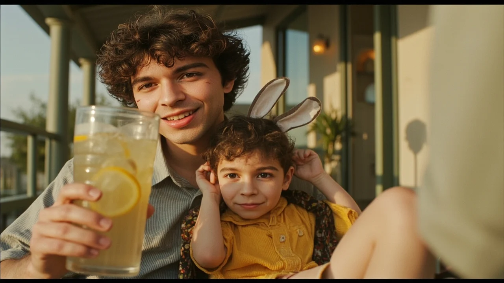
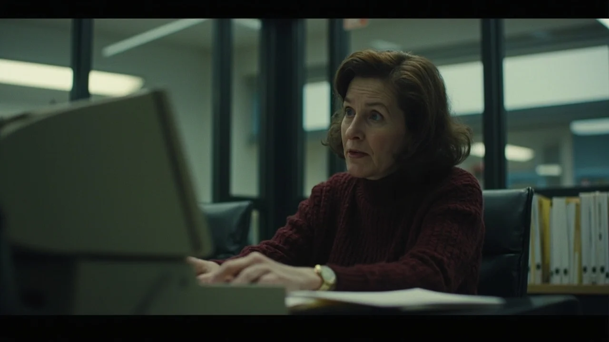
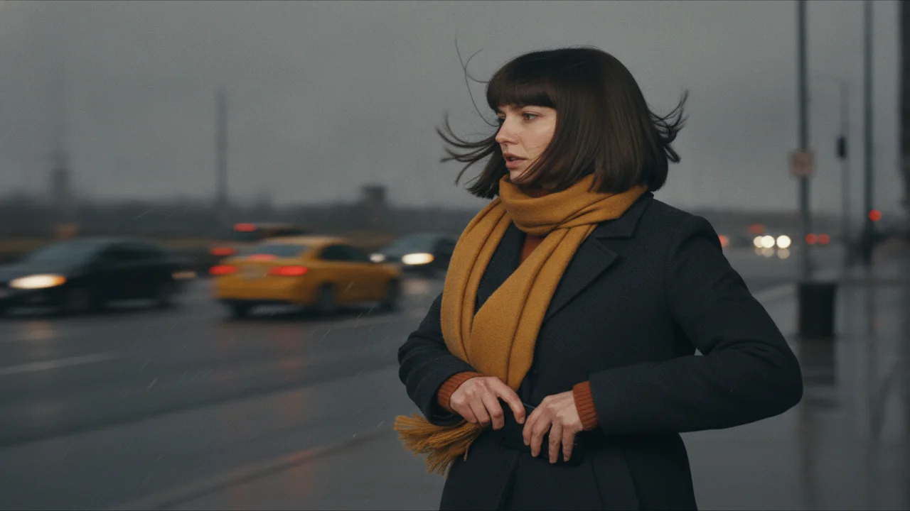
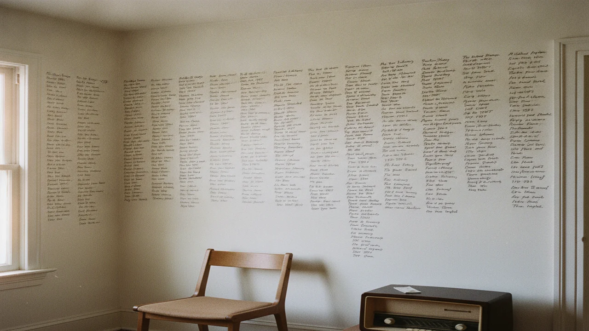
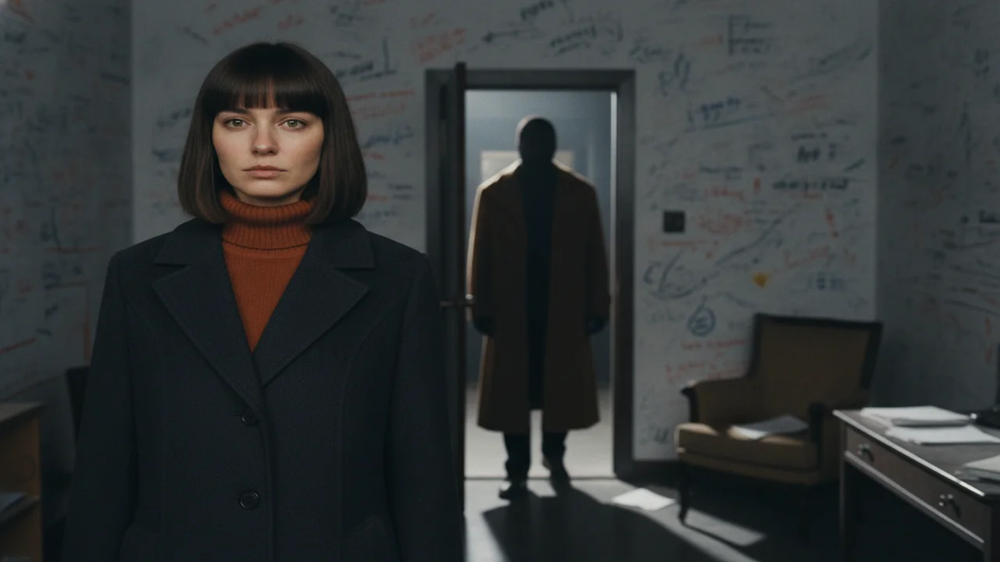

La fotografía olía a cartón húmedo y pegamento seco de hace quince años. Clara la sostuvo por los bordes para no rozar el brillo amarilleado del papel. En la imagen, una niña de diez años soplaba las velas de una tarta casera de fresas; a su izquierda, su padre sostenía una jarra de limonada y, a la derecha, su hermano Mateo alzaba dos dedos detrás de su cabeza para hacerle cuernos de broma. Todo encajaba en la memoria de aquel domingo de verano salvo la esquina superior derecha.
Al fondo del porche, recortado contra la celosía blanca, un hombre permanecía de pie. Vestía un abrigo de paño marrón oscuro, una prenda pesada e invernal que desentonaba con el calor de julio. Miraba fijo al objetivo, con las manos metidas en los bolsillos y los labios apretados en una línea recta que simulaba una sonrisa.
Clara levantó la vista hacia la mesa del comedor, donde su madre desgranaba judías verdes.
—Mamá, ¿quién era este hombre?
Mercedes tomó la copia con la yema de los dedos y entrecerró los ojos tras las gafas. Su expresión apenas varió; era la calma rutinaria de quien revisa la lista de la compra.
—¿Qué hombre, Clara?
—El que está detrás de la hiedra. Lleva un abrigo marrón.
Mercedes devolvió la foto sobre el hule y soltó una risita seca.
—Será la sombra del toldo, hija. O algún vecino que se asomó a saludar. En esa fiesta solo estábamos nosotros cuatro y los tíos.
Clara guardó la fotografía en el bolsillo. Durante esa tarde, mientras la lluvia golpeaba los cristales del piso, revolvió las cajas del altillo. Encontró el mismo abrigo marrón en la foto de su primer día de instituto, asomando tras la verja; lo vio de nuevo en una instantánea de la playa de Llanes, sobre las rocas húmedas mientras Mateo aprendía a nadar. Siempre a la misma distancia. Siempre con la misma fijeza inerte en los ojos.
El lunes amaneció frío y con niebla baja. Clara subió al autobús de la línea veintisiete en la glorieta. El vaho empañaba las ventanillas y el suelo de goma crujía bajo las suelas mojadas. Avanzó por el pasillo y se sentó en la cuarta fila.
Tres asientos más adelante viajaba un hombre con un abrigo largo de paño marrón gastado en los puños.
Clara sintió una punzada en la boca del estómago. Cuando el vehículo frenó ante un semáforo, el viajero giró la cabeza hacia el pasillo.
A Clara se le cortó el aliento. Aquel rostro no era el del desconocido borroso de las fotografías. Era don Anselmo.
Don Anselmo Garrido había sido su profesor de historia durante tres cursos en el instituto. Tenía la misma barbilla partida, la arruga entre las cejas y la pequeña insignia metálica prendida en la solapa izquierda. El corazón de Clara empezó a martillear desbocado.

Se levantó del asiento y se apoyó en la barra contigua.
—¿Don Anselmo? —murmuró.
El hombre alzó la mirada despacio. Sus ojos eran de un gris apagado y turbio, como agua estancada en un barreño de cinc. La miró a través de ella, como si Clara fuese una figura de humo.
—Se equivoca de persona, señorita —respondió.
La voz sonó rasposa, pero el timbre pertenecía sin duda a don Anselmo. Antes de que Clara pudiera insistir, las puertas se abrieron con un bufido y el hombre descendió hacia la acera, perdiéndose entre la marea de paraguas.
Una hora después, Clara entraba en la secretaría del instituto.
—Busco el contacto de don Anselmo Garrido —dijo, apoyando las palmas sobre el mostrador—. Fui alumna suya.
La secretaria consultó el registro digital de nóminas y negó con la cabeza tras varios minutos de tecleo silencioso.
—Aquí no figura nadie con ese nombre. Ni titular ni interino.
—Dio clase aquí hasta hace dos años. Al final de la segunda planta.
—Al final de esa planta solo está el cuarto de limpieza —zanjó la mujer—. Desde que se inauguró el edificio.
Clara subió a la segunda planta. La puerta junto al aula de dibujo tenía un cartel de plástico: *Útiles de limpieza*. Dentro solo había cubos azules, fregonas escurridas y garrafas de lejía. Ni libros ni mapas históricos. Nada.
Regresó a su apartamento con el estómago cerrado. Se sentó ante el ordenador y buscó el nombre del profesor en directorios, claustros y listas de oposiciones. Ni una sola mención administrativa. Aquel hombre se había disuelto del mundo sin dejar rastro.
A las siete de la tarde, la llave giró en la cerradura de la entrada. Mateo entró cargado con su tubo portaplanos y una carpeta llena de croquis. Dejó las zapatillas mojadas junto al felpudo y se colgó la sudadera verde oliva en la percha.
—Vaya día de perros en la escuela de arquitectura —dijo Mateo—. ¿Tienes café?

Clara lo miró desde la mesa. La presencia de su hermano, con su pelo rizado y esa cicatriz diminuta sobre la ceja izquierda que se hizo al caer de la bicicleta a los ocho años, le devolvió una brizna de aire a los pulmones.
—Mateo, siéntate. Mira esto.
Clara colocó las fotografías sobre la mesa y le relató el encuentro del autobús y la visita al instituto. Mateo examinó las imágenes bajo la lámpara con el ceño fruncido.
—Es raro el abrigo, Clara, pero igual estás saturada de estudiar. Hace semanas que duermes mal.
—¡Fíjate en las fotos! Esta mañana tenía la cara de don Anselmo. ¿Te acuerdas de él? Vino a casa cuando terminé bachillerato.
Mateo clavó la vista en la esquina del papel. Un parpadeo lento veló sus ojos pardos.
—Papá tiene muchos libros de historia… pero no me suena ningún Anselmo, Clara. De verdad que no me acuerdo.
Clara sintió que el suelo perdía firmeza. Tomó la fotografía de nuevo: la figura del abrigo marrón parecía haber ganado nitidez sobre el papel satinado, mientras que los contornos de sus padres y de Mateo lucían ahora ligeramente más pálidos, como si la tinta original se evaporase bajo la luz.
El martes por la mañana, Clara se presentó en la comisaría de distrito. Tras esperar en una sala con olor a tabaco frío, un subinspector la atendió tras una mampara de metacrilato rayado.
—Quiero denunciar una usurpación de identidad y una desaparición sistemática —comenzó Clara, extendiendo las fotografías—. Hay un individuo que se apropia de la vida de personas concretas. Cuando lo hace, todo el mundo olvida que existieron.
El agente examinó los papeles con desgana.
—Necesito un nombre, dos apellidos y un documento de identidad.
—Don Anselmo Garrido. Era profesor en la calle Ibiza.
El policía tecleó los datos en el terminal. La pantalla zumbó sin arrojar resultados.
—No consta en el censo actual ni en el histórico. Sin datos comprobables ni un familiar directo, no puedo abrir diligencias.

—¡Nadie puede denunciarlo porque nadie se acuerda de él! —suplicó Clara—. Si borra la memoria de los demás, nadie viene a comisaría.
El agente suspiró con frialdad y le devolvió los papeles.
—Váyase a casa, señorita. Si vuelve a montar un escándalo tendré que multarla por alteración del orden.
Clara salió a la calle con las manos heladas. Con una angustia que le cerraba la garganta, sacó el teléfono y marcó el número fijo de sus padres para escuchar la voz de su hermano.
El tono sonó cuatro veces antes de que su madre descolgara.
—¿Mamá? ¿Está Mateo en casa? No me responde al móvil.
Al otro lado se hizo una pausa densa, un silencio blanco que sonó más aterrador que cualquier alarma.
—¿Quién dices, Clara?
—Mateo. Tu hijo. Mi hermano.
Mercedes dejó escapar una risita desconcertada.
—Hija, qué bromas tienes. Sabes bien que siempre quise tener otro crío después de ti, pero nunca llegó. Has sido hija única toda la vida.
A Clara se le cayó el teléfono sobre la acera. La pantalla se partió en una telaraña de cristal. No se detuvo a recogerlo; echó a correr hacia la casa familiar con los pulmones ardiendo y las lágrimas frías en las mejillas.
Subió los cuatro pisos de la escalera comunitaria sin esperar al ascensor. Metió la llave en la cerradura y empujó la puerta de golpe.
—¡Mateo! —gritó, cruzando el recibidor.
Sus padres estaban en el salón viendo la televisión. Su padre la miró sorprendido, con el mando suspendido en el aire.

Clara corrió por el pasillo hasta la segunda puerta a la derecha: la habitación de su hermano. Empujó la hoja de madera.
El cuarto no tenía la cama nido de Mateo, ni sus planos de arquitectura sobre el escritorio, ni sus pósteres en la pared. En su lugar había una tabla de planchar plegada, tres cajas de mantas y una hilera de trajes viejos colgados en fundas de plástico negro. El polvo cubría el suelo como si nadie hubiese vivido allí en diez años.
Clara cayó de rodillas sobre la alfombra.
—¿Dónde están sus cosas? —sollozó, clavando las uñas en el tejido—. Papá, ¿dónde habéis puesto sus maquetas? La cicatriz de la ceja... cuando se cayó en el parque...
Su padre se acercó despacio, con las manos abiertas y una compasión sincera y asustada en la mirada.
—Clara, nos estás asustando. En este cuarto solo guardamos los trastos de la abuela. Ven a sentarte, vamos a llamar a un médico.
Clara se levantó de un salto, eludió los brazos de su padre y huyó escaleras abajo hacia el portal.
Se detuvo ante el espejo del vestíbulo. Cerró los ojos con fuerza para retener el rostro de su hermano. Trató de reconstruir sus facciones en la penumbra de su memoria. Y entonces sintió el verdadero abismo: la forma exacta de la nariz de Mateo se le escapaba entre los dedos. Quiso recordar el timbre de su risa y solo halló un eco plano y hueco, como el crujido de hojas secas pisoteadas en un sendero.
El hombre del abrigo marrón ya no estaba solo en las fotos. El olvido había colonizado su propia cabeza.
Clara se encerró en su apartamento. Echó los tres cerrojos y arrastró la cómoda del pasillo hasta bloquear la puerta principal. Bajó las persianas a cal y canto, dejando la casa en una penumbra rota únicamente por la lámpara del escritorio.
Había comprado en la papelería cuatro paquetes de rotuladores negros de punta gruesa indeleble.
Comenzó por la pared del cabecero de la cama. Escribió con trazos rápidos, hundiendo la fibra sobre el yeso blanco hasta que la muñeca le ardió:
*DON ANSELMO GARRIDO. Profesor de historia. Ojos castaños. Insignia de bronce en la solapa.*
Debajo anotó los nombres de otros rostros que creyó vislumbrar en las fotos familiares: tenderos, vecinos del barrio, siluetas desvanecidas. Y en el centro de la pared norte, con letras de más de un palmo de altura, trazó el nombre de su hermano:
*MATEO MENDOZA. Veinte años. Mi hermano pequeño. Estudiante de arquitectura. Manchas de grafito en los nudillos. Sudadera verde oliva. Cicatriz en la ceja izquierda por una caída de bicicleta a los ocho años. Le gustaba el café cargado con dos cucharadas de azúcar.*

Rellenó cada centímetro de pared con recuerdos tangibles: las tardes de lluvia jugando a las cartas, el viaje a la playa de Llanes, la música que sonaba en su cuarto cuando dibujaba de noche. La tinta negra cubrió el yeso como una hiedra apretada, un escudo de grafito y memoria contra la noche que avanzaba implacable.
Agotada, con las yemas de los dedos tiznadas de negro y el olor químico de los rotuladores en la garganta, Clara se dejó caer sobre la alfombra a los pies de la cama. Abrazó sus rodillas y mantuvo la mirada fija en las letras de la pared hasta que los párpados se le cerraron por completo.
Un rayo de luz grisácea se filtró entre las rendijas de la persiana.
Clara despertó con un sobresalto y el corazón latiéndole en la boca. El silencio en el apartamento era absoluto.
Se incorporó apoyándose en la pared. Parpadeó para acostumbrar los ojos a la penumbra matinal y contempló los muros de su dormitorio.
Las palabras seguían allí. Los nombres de don Anselmo y de Mateo destacaban en la penumbra como cicatrices sobre la cal viva. Clara soltó un suspiro trémulo. No lo había soñado; la memoria resistía.
Pero al bajar la vista hacia la parte inferior del muro, junto al zócalo de madera y justo debajo de la última línea que describía la risa de su hermano, Clara se quedó petrificada.
Había una nueva frase escrita con rotulador negro. La tinta estaba fresca, reluciente y húmeda bajo la tenue luz del amanecer. Los trazos tenían las mismas curvas alargadas, la misma inclinación a la derecha y la misma presión que su propia mano. Era su letra.
La línea decía:
*CLARA MENDOZA. Veinticuatro años. Desaparición: veintiséis de octubre.*
La fecha de hoy.
Desde el pasillo exterior, al otro lado de la cómoda que bloqueaba la entrada, llegó el crujido seco y pausado de una pisada sobre la tarima de madera.
Clara no gritó. Comprendió con una lucidez atroz que el intruso no venía a matarla; venía a ocupar su ropa, a sentarse en su mesa y a borrar su paso por el mundo para que su familia y sus amigos siguieran desayunando sin saber jamás que una muchacha de veinticuatro años llamada Clara había respirado a su lado.
El pomo de latón de la puerta del dormitorio empezó a girar despacio, milímetro a milímetro.
Con los dedos rígidos por el espanto, Clara arrancó la última hoja de su cuaderno de notas sobre el escritorio. Apoyó el rotulador contra el papel y escribió una única frase con un pulso desesperado:
«Si estás leyendo esto, significa que todavía no me ha encontrado».
Dobló el papel en cuatro pliegues apretados y lo introdujo en la rendija oscura que separaba el zócalo de la pared, empujándolo con la uña hasta que quedó oculto en el hueco del ladrillo.
La puerta crujió al ceder bajo una presión lenta y silenciosa. La sombra larga de un abrigo marrón se derramó sobre el suelo de la habitación. Clara alzó la vista y no apartó los ojos de la figura que cruzaba el umbral.